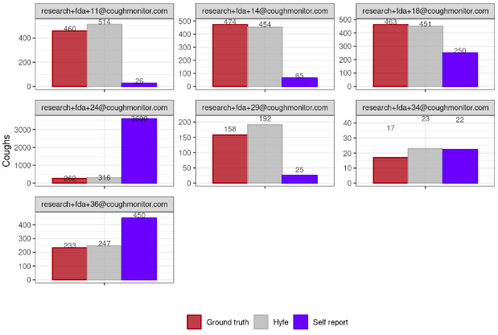

Cough is a highly variable and unpredictable behavior, making it extremely difficult for clinicians to estimate cough frequency through direct observation. Even at the highest cough rate documented in Hyfe’s validation study (111 coughs/hour), a clinician would need to observe a patient for many hours to achieve even a minimally reliable estimate—an unrealistic approach in real-world medical practice.
Because direct observation is impractical, the current clinical “gold standard” for cough frequency is patient recall. However, extensive evidence—including prior research (e.g., Decalmer 2007)—shows that recall is highly unreliable, particularly over long periods. Hyfe’s validation study further confirms this: when nine departing participants were asked to estimate how many times they coughed during the study, two could not provide a number at all and seven gave widely inaccurate estimates. Except for one low-cough participant, system estimates aligned far more closely with ground truth than patient recall did (as illustrated in the below figure).

Taken together, these results show that system accuracy must be judged relative to the available alternative—not in isolation. Since patient recall is significantly less accurate and far less granular, relying on it carries greater risk, including potential mismanagement of medications tied to cough severity. While clinicians may be accustomed to the limitations of recall, the system provides transparent accuracy labeling and more reliable objective data, offering a safer and more informative basis for clinical decision-making.